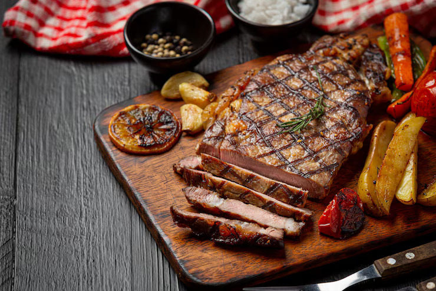

Steak

Description
A classic steak recipe is all about simplicity and letting the quality of the meat shine. Typically made with a well-marbled cut like ribeye, sirloin, or filet mignon, the steak is seasoned generously with salt and pepper, then seared in a hot pan or grilled to the desired doneness. A good sear creates a flavorful crust on the outside while keeping the inside juicy and tender.
Ingredients
- 1 thick-cut steak (ribeye, sirloin, or filet mignon — about 300/400g)
- Salt (preferably kosher or sea salt)
- Freshly ground black pepper
- 1/2 tablespoons cooking oil (e.g., vegetable or canola oil)
- 2 tablespoons unsalted butter
- 2/3 garlic cloves, smashed
- 1/2 sprigs fresh rosemary or thyme (optional)
Steps
- Pat steak dry, season with salt and pepper.
- Heat oil in a hot pan until shimmering.
- Sear steak 2/3 minutes per side (for medium-rare), depending on thickness.
- Add butter, garlic, and herbs, baste steak for 1/2 minutes.
- Remove from pan, let rest 5 minutes before serving.
Home